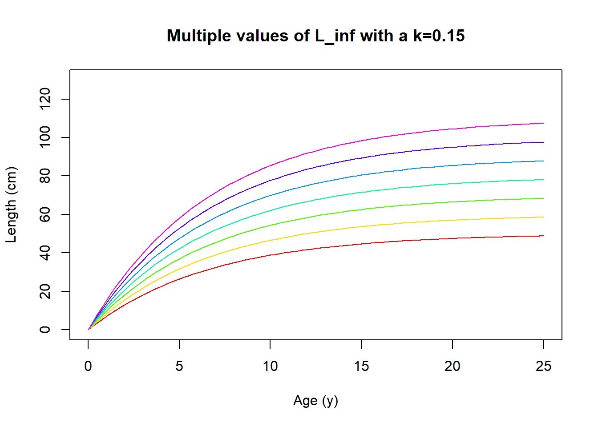

Chapter 2 Exercises
Exercise 1 & 2
Math Prerequisite: Integration
2.0.1 The biology
Here we work with a very important concept, individual growth. If one understands how an organism grows, one can begin to see how growth informs everything from population biomass to maturity. The equation we are working with is a famous one, the one presented by Ludwig von Bertalanffy. While the growth equation has stood the test of time and bears his name, it’s important to point out that Ludwig was a literal nazi-party member.
That being said, we start off by simply expressing that the weight of an individual at a given age \(W(t)\) is related to its length at the same age \(L(t)\) to the third power multiplied by the density \(\rho\) of the organism resulting in \(W(t) = \rho L(t)^3\). Most organisms but not all follow this 3-dimensional simplified view so the third power makes intuitive sense. We now step into the logic of the growth equation. If we assume that an organism’s change in weight over time is dependent on anabolic (using energy and mass to build, muscle building) and catabolic (breaking down mass to produce energy, digestion) processes we show that simply as the following.
\[ \\[10pt] \frac{dW}{dt} = \text{anabolic - catabolic} \\[10pt] \] We take things a step further and translate the anabolic and catabolic to quantifiable terms that link to an organism’s metabolism. Here Marc explains the justification for surface area for the anabolic term and volume for the catabolic term. It’s important to realize that these are assumptions and can be changed accordingly.
\[ \\[10pt] \frac{dW}{dt} = \sigma L^2 -cL^3 \\[10pt] \] The next step is to incorporate our previous assumption of the 3-dimensional organism. Since we know that change in weight over time is related to the volume of the organism, one of the “L”’s has to be dependent on time also, we get \(\frac{dW}{dt} = 3\rho L(t)^2 \frac{dL}{dt}\) by taking the derivative. Now its just substitution to include this new length view of growth into our metabolic view of growth. And lastly, Marc then rearranges the equation to show the second form of the von Bertalanffy growth equation which for all practical matters is much easier to interpret.
\[ \\[10pt] \frac{dW}{dt} = 3\rho L^2 \frac{dL}{dt} = \sigma L^2 -cL^3 \\[10pt] \text{after simplifying we get} \\[10pt] \frac{dL}{dt} = \frac{\sigma}{3\rho}-\frac{c}{3\rho}L \\[10pt] \text{after rearranging we get} \\[10pt] \frac{dL}{dt} = \frac{c}{3\rho} \left(\frac{\sigma}{c}-L\right) = k(L_{\infty}-L) \]
The rearranged equation tells us that change in length given an age corresponds to some \(k\) growth component multiplied by the difference between the largest that organism can be with its actual length!
2.0.2 The challenge
Check that the units of q, k, and asymptotic size are correct and find a unique solution for the ordinary differential equation given \(L(0)=L_0\)
2.0.3 The solution
Here Marc suggested an alternative way to group the parameters and we need to check the units so they make sense. \[ \\[10pt] q = \frac{\sigma}{3\rho} \\[10pt] k = \frac{c}{3\rho} \\[10pt] \frac{dL}{dt} = q-kL \] If the derivative is some unit length over time then we can assume something like centimeters per day. That would require the other two terms to have the same units. \(q\) is by itself so centimeters per day is fine but \(k\) is a little trickier. We know \(L\) is centimeters but we can’t have two lengths multiplied together otherwise we would get centimeters squared. That would suggest that \(k\) is just some unitless number per day.
checking our work : Recall that \(\rho\) was a density so that means it has to have units of weight divided by volume such as \(\frac{kg}{cm^3}\). With simple substitution cancelling we can see that the units for \(q = \frac{\sigma}{\rho} = \frac{cm}{day}\). And similarly, if we use the units from \(c\) which is just the same units as sigma but one power higher, then our units for \(k\) are also correct when we substitute and cancel.
Lastly, referring to the other form of the equation with \(L_\inf\) we need to figure out those units. The units for \(\sigma\) come directly from the book and we just figured out what \(c\)’s units. So when we multiply the two to get asymptotic length (\(L_inf\)), most of the units cancel only leaving cm.
\[ \\[10pt] L_\inf = \frac{\sigma}{c} \\[10pt] \sigma = \frac{kg}{day*cm^2} \\[10pt] c = \frac{kg}{day*cm^3} \\[10pt] \frac{\sigma}{c} = cm \] Now to find the unique solution for the equation that will require some integration.
\[ \text{we start with our equation} \\[10pt] \frac{dL}{dt} = k(L_{\infty}-L)\\[10pt] \\[10pt] \text{we then try to group all the L's together} \\[10pt] \frac{dL}{(L_{\infty}-L)} = k*dt \\[10pt] \text{now this is simpler to integrate} \\[10pt] \int{\frac{dL}{(L_{\infty}-L)}}=k\int{dt} \\[10pt] \text{notice we moved k out front and now we integrate} \\[10pt] \] Now remember that the derivative of the natural log of a number is one over that number. Since we want the integral we just need to go in reverse. If you notice the left side of the equation is one over a number. Our integral will be a natural log! And for the other side it’s just \(t\) plus some constant.
\[ \text{integrate using natural log rule, notice the negative out front} \\[10pt] -ln(L_\infty-L(t))=kt+C \\[10pt] \text{for simplicity let's move the negative over} \\[10pt] ln(L_\infty-L(t))=-kt+C \\[10pt] \text{now we want to remove the ln by using an exponent which applies to both sides but not C} \\[10pt] exp(ln(L_\infty-L(t)))=C*exp(-kt) \\[10pt] \text{which after simplifying and isolating L(t), looks like this} \\[10pt] L(t)=L_\infty-C*exp(-kt) \\[10pt] \text{now that we have L(t) we can use the initial condition Marc provided, where L(0) = L0, t = 0, to figure out what C is} \\[10pt] L(t)=L_\infty-C*exp(-k*0) = L_0 \\[10pt] C = L_\infty-L_0 \text{Now we just plug C back into the equation to figure out L(t) with a real constant!} \\[10pt] L(t)=L_\infty-(L_\infty-L_0)*exp(-kt) \\[10pt] \text{distribute the new C value} \\[10pt] L(t)=L_\infty-L_\infty*exp(-kt)+L_0*exp(-kt) \\[10pt] \text{factor out Linf} \\[10pt] L(t)=L_\infty(1-exp(-kt)+L_0*exp(-kt) \]
2.0.5 Reflecting on the biology
This growth equation is used extensively in fisheries and many other applications. If you were to obtain a reliable estimate of growth for an organism you can learn a lot about its life such as when does maturity likely occur or the maximum size you would expect to see in the wild.
Here is what the growth curve looks plotted out if we assume \(L_0\) is 0. The result shows a variety of fish that live up to 25 years old (assuming they make it that far before being eaten), with a variety of \(L_\infty\) values. Now the tricky part after doing the math is catching the critters and asking how old they are when you measure them!
vbg <- function(k,Linf,x) Linf*(1-exp(-k*x))
Linf <- seq(50,110,10)
col<-rainbow(length(Linf))
for(i in seq_along(Linf)) {
curve(vbg(.15, Linf[i], x), from=0, to=25, add=i!=1, col=col[i], ylim=c(0,130), ylab = "Length (cm)", xlab = "Age (y)", main="Multiple values of L_inf with a k=0.15")
}
Exercise 3
Math Prerequisite: derivatives
2.0.6 The biology
If we recall that \(b\) is our allometric parameter and it is often around 3 for fish we can plug this into the maturity equation provided.
\[ t_m = \frac{1}{k}*log\left(\frac{m + bk}{m}\right) \]
Similarly, we can use the three different mortality values that Marc provided (0.1, 0.2, 0.5) in combination with a sequence of \(k\), growth rate values, to visualize optimal maturity ages.
tm <- function(b,m,k) 1/k * log((m + b*k)/m)
agem <- c(0.1, 0.2, 0.5)
col<-rainbow(length(agem))
for(i in seq_along(agem)) {
curve(tm(3, agem[i], x), from=0.1, to=2, add=i!=1, col=col[i], ylim=c(0,15), ylab = "Optimal age at maturity", xlab = "Growth rate, k", main="Multiple values of M with b=3")
}The main point here is to realize that in systems where natural mortality is high, whether this is disease, predation, starvation or any other source, they incentive an earlier maturity age. This makes intuitive sense, if you are going to die younger, you should have kids younger. But there’s also another important point, the strength of this relationship decreases as growth rate tends to increase and also reduces age at maturity.
But how did we come to this conclusion? This is what Marc is asking us to do now. Show that this equation is possible from first principles by using our understanding of growth and an exponential distribution for survival. And specifically find the length at maturity.
2.0.7 The challenge
Find length at maturity assuming that fitness could be represented by \(F(t) = e^{-mt}*f*L(t)^b\)
2.0.8 The solution
In the previous exercise, Marc assumed that fitness could be represented by \(F(t) = e^{-mt}\cdot f \cdot L(t)^b\) where the first half of the term corresponds to survival given an age, and the second half of the term corresponds to reproductive output given an age and scaling component. The first step is to replace \(L(t)\) with our previously derived growth equation which would look like something like this. But we can also do one extra step to make things easier for ourselves, we cancel out the “birth” term, where we assume size is equal to 0. Realize this assumption may not be appropriate if size at birth is relatively large compared to \(L_\infty\). Also, fecundity, f is a constant so we can set that to 1.
$$ F(t) = e^{-mt} f (L_(1-e^{(-kt)}+L_0*exp(-kt))^b
\[10pt] \[10pt]
F(t) = e^{-mt} (L_(1-e{(-kt)}))b $$
Since we want to figure out the change in \(F\) given this function we take the derivative of this with respect to \(L\).
$$
F(t) = e^{-mt} (L_(1-e{(-kt)}))b
\[10pt] \[10pt]
(e^{-m t}(l_-l_e^{-k t})^{b})
\[10pt] \[10pt]
=(l_-e^{-k t} l_){b}((e{-m t}))+e^{-m t}(((l_-e^{-k t} l_)^{b}))
\[10pt] \[10pt]
=(l_-e^{-k t} l_)^{b} e^{-m t}((-m t)) + e^{-m t}(((l_-e^{-k t} l_)^{b}))
\[10pt] \[10pt]
=(l_-e^{-k t} l_)^{b} e^{-m t}-m + e^{-m t}(((l_-e^{-k t} l_)^{b}))
\[10pt] \[10pt]
=-e^{-m t} m(l_-e^{-k t} l_)^{b}+b e^{-m t}(l_-e^{-k t} l_){b-1}((l_-e{-k t} l_))
\[10pt] \[10pt]
\[\begin{aligned} &=-e^{-m t} m\left(l_\infty-e^{-k t} l_\infty\right)^{b}+ -l_\infty\left(\frac{d}{d t}\left(e^{-k t}\right)\right)+\frac{d}{d t}\left(l_\infty\right) \cdot b \cdot e^{-m t}\left(l_\infty-e^{-k t} l_\infty\right)^{b-1} \end{aligned}\]\[10pt] \[10pt]
\[\begin{aligned} =&-e^{-m t} m\left(l_\infty-e^{-k t} l_\infty\right)^{b}+ \left( l_\infty \cdot k \cdot e^{-k t} + \frac{d}{d t}(l_\infty)\right) \cdot b\cdot e^{-m t}\left(l_\infty-e^{-k t} l_\infty\right)^{b-1} \end{aligned}\]\[10pt] \[10pt]
=-e^{-m t} m(l_-e^{-k t} l_)^{b} + (l_k e^{-k t} +0) be^{-m t}(l_-e^{-k t} l_)^{b-1}
\[10pt] \[10pt]
F’(t) = -e^{-m t} m(l_-e^{-k t} l_)^{b} + (l_k e^{-k t}) be^{-m t}(l_-e^{-k t} l_)^{b-1}
\[10pt] \[10pt]
F’(t) = be^{-kt-mt} l_k(l_-e^{-k t} l_)^{b-1} -e^{-m t} m(l_-e^{-k t} l_)^{b}
$$ That was a beast of a derivative. Let’s take a moment to recap what we did. We started with a function that describes fitness over time now we are looking at how fitness changes over time. To find the optimum length of maturity we still need to solve for \(t\) after setting the equation equal to 0.
$$
0 = be^{-kt-mt} l_k(l_-e^{-k t} l_)^{b-1} -e^{-m t} m(l_-e^{-k t} l_)^{b}
\[10pt] \ \[10pt]
0 = -S(l_-e^{-k t} l_)^{b}
\ \[10pt]
0 = - S
\[10pt] \[10pt]
0 = -
\[10pt] \[10pt]
0 = -
\[10pt] \[10pt]
=
\[10pt] \[10pt]
1 = -
\[10pt] \[10pt]
= e^{kt} - 1
\[10pt] \[10pt]
log( + 1) = kt
\[10pt] \[10pt]
log( + 1) = t
\[10pt] \[10pt]
t = *log()
$$